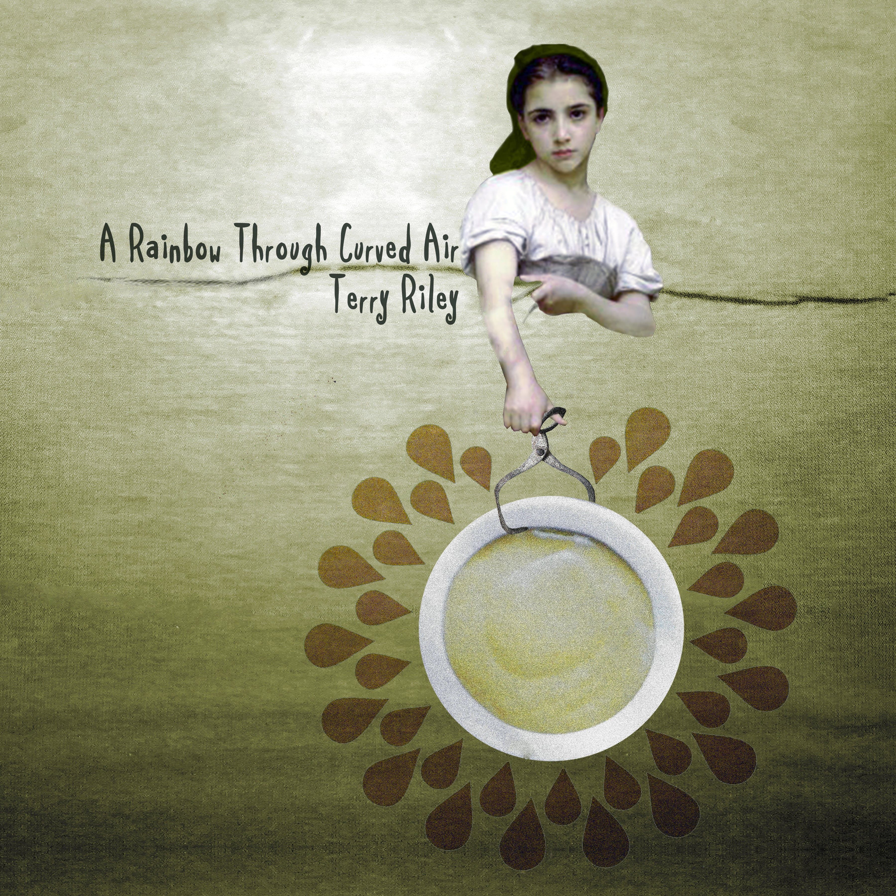

Record design 3
"A Rainbow Through Curved Air"

Terry Riley’s “A Rainbow Through Curved Air” was one of the more difficult records for me to visually sum up. Although it was one of my favourite pieces because of its electronic, almost 8-bit sound, it was in my opinion one of the more complex pieces, however I tried to sum up the sound and emotion in a similar way to my other two album covers.
I repeated the use of the imagery of the droplets because this song was also very heavy in its use of repetition. I created an sort of starburst shape from this and an image of a tub of paint as I felt this would be quite positive imagery to reflect that I enjoyed the song. However, I also wanted to reflect that this electronic sound could get a bit annoying to listen to after a while because of the repetition so I tried to reflect this by positioning the figure of the woman (taken from an oil painting) holding the starburst shape away from her with a pair of forceps.